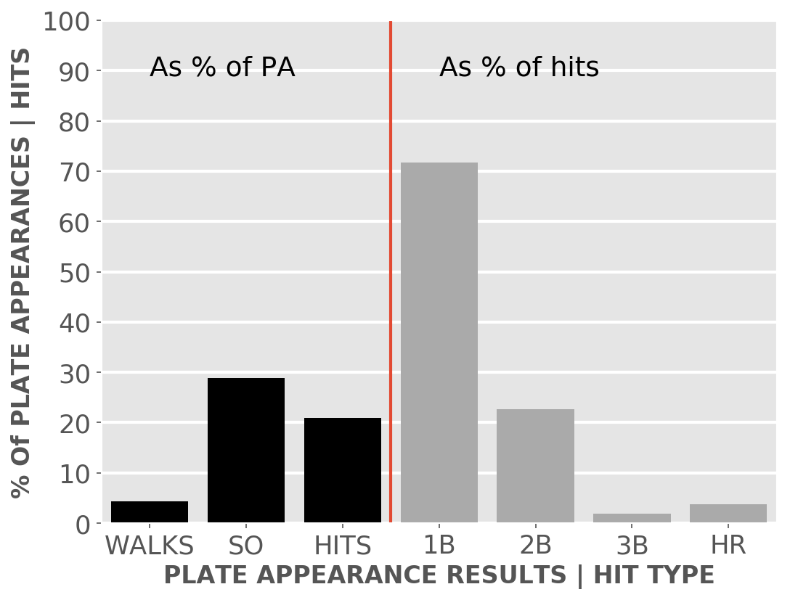

Baseball 2018
White Sox
A little-more-than-casual but not-very-wonky statistical look at the current season
Plenty of seats available to watch the kids learn how to play in the big league.
Updated Saturday, April 21, at 5:32 p.m. Pybaseball gathers these from Baseball-reference.com.
Games
JUMP TO TOP | BATTERS | PITCHERS
On Friday, Apr 20, the Sox lost a night game at home against the Astros, 0 to 10, in 9 innings. The winning pitcher was Verlander, losing pitcher was Shields. Save: None. Next scheduled game: Saturday, Apr 21, a night game at home with the Astros.
Summary results by team
| Team | Wins | Loses | Avg. Sox runs | Avg. runs against |
| Astros |
0 |
1 |
0.0 |
10.0 |
| Athletics |
0 |
3 |
4.67 |
10.0 |
| Blue Jays |
1 |
2 |
3.67 |
7.0 |
| Rays |
1 |
2 |
3.67 |
4.0 |
| Royals |
2 |
0 |
9.0 |
5.0 |
| Tigers |
0 |
3 |
2.67 |
5.33 |
| Twins |
0 |
1 |
0.0 |
4.0 |
Batters
JUMP TO TOP | GAMES | PITCHERS
Click the link under a player's name to get up-to-speed on a player at bat.
| At bats | 66 |
| Hits | 18 |
| Home runs | 4 |
| Batting Avg. | 0.273 |

| Runs | 9 |
| RBI | 9 |
| On-base percent | 0.342 |
| Weighted OBP | 0.37 |
| Slugging % | 0.5 |
| Stolen bases | 0 |
| Caught stealing | 0 |
Other measures
| Weighted runs above avg. | 3.2 |
| Runs Above Replacement | 2.5 |
| Fielding % | -0.5 |
| WAR | 0.3 |
| At bats | 59 |
| Hits | 14 |
| Home runs | 3 |
| Batting Avg. | 0.237 |

| Runs | 9 |
| RBI | 5 |
| On-base percent | 0.318 |
| Weighted OBP | 0.323 |
| Slugging % | 0.407 |
| Stolen bases | 8 |
| Caught stealing | 0 |
Other measures
| Weighted runs above avg. | 0.5 |
| Runs Above Replacement | 4.6 |
| Fielding % | -0.7 |
| WAR | 0.5 |
| At bats | 38 |
| Hits | 9 |
| Home runs | 2 |
| Batting Avg. | 0.237 |

| Runs | 4 |
| RBI | 4 |
| On-base percent | 0.293 |
| Weighted OBP | 0.333 |
| Slugging % | 0.474 |
| Stolen bases | 0 |
| Caught stealing | 0 |
Other measures
| Weighted runs above avg. | 0.6 |
| Runs Above Replacement | 0.6 |
| Fielding % | -1.0 |
| WAR | 0.1 |
| At bats | 51 |
| Hits | 11 |
| Home runs | 5 |
| Batting Avg. | 0.216 |

| Runs | 10 |
| RBI | 11 |
| On-base percent | 0.365 |
| Weighted OBP | 0.39 |
| Slugging % | 0.529 |
| Stolen bases | 0 |
| Caught stealing | 0 |
Other measures
| Weighted runs above avg. | 3.8 |
| Runs Above Replacement | 3.6 |
| Fielding % | |
| WAR | 0.4 |
| At bats | 49 |
| Hits | 13 |
| Home runs | 1 |
| Batting Avg. | 0.265 |

| Runs | 3 |
| RBI | 4 |
| On-base percent | 0.368 |
| Weighted OBP | 0.33 |
| Slugging % | 0.347 |
| Stolen bases | 1 |
| Caught stealing | 0 |
Other measures
| Weighted runs above avg. | 0.7 |
| Runs Above Replacement | 0.4 |
| Fielding % | -1.2 |
| WAR | 0.0 |
| At bats | 42 |
| Hits | 7 |
| Home runs | 0 |
| Batting Avg. | 0.167 |

| Runs | 1 |
| RBI | 4 |
| On-base percent | 0.265 |
| Weighted OBP | 0.221 |
| Slugging % | 0.19 |
| Stolen bases | 1 |
| Caught stealing | 0 |
Other measures
| Weighted runs above avg. | -3.6 |
| Runs Above Replacement | -3.8 |
| Fielding % | -2.0 |
| WAR | -0.4 |
| At bats | 29 |
| Hits | 7 |
| Home runs | 0 |
| Batting Avg. | 0.241 |

| Runs | 4 |
| RBI | 3 |
| On-base percent | 0.333 |
| Weighted OBP | 0.287 |
| Slugging % | 0.276 |
| Stolen bases | 4 |
| Caught stealing | 0 |
Other measures
| Weighted runs above avg. | -0.7 |
| Runs Above Replacement | 1.8 |
| Fielding % | 0.9 |
| WAR | 0.2 |
| At bats | 63 |
| Hits | 14 |
| Home runs | 1 |
| Batting Avg. | 0.222 |

| Runs | 5 |
| RBI | 3 |
| On-base percent | 0.242 |
| Weighted OBP | 0.247 |
| Slugging % | 0.317 |
| Stolen bases | 0 |
| Caught stealing | 1 |
Other measures
| Weighted runs above avg. | -3.5 |
| Runs Above Replacement | -4.7 |
| Fielding % | -1.3 |
| WAR | -0.5 |
| At bats | 66 |
| Hits | 14 |
| Home runs | 3 |
| Batting Avg. | 0.212 |

| Runs | 10 |
| RBI | 9 |
| On-base percent | 0.325 |
| Weighted OBP | 0.328 |
| Slugging % | 0.409 |
| Stolen bases | 4 |
| Caught stealing | 0 |
Other measures
| Weighted runs above avg. | 0.9 |
| Runs Above Replacement | 6.8 |
| Fielding % | 1.1 |
| WAR | 0.7 |
| At bats | 25 |
| Hits | 4 |
| Home runs | 0 |
| Batting Avg. | 0.16 |

| Runs | 1 |
| RBI | 1 |
| On-base percent | 0.276 |
| Weighted OBP | 0.245 |
| Slugging % | 0.24 |
| Stolen bases | 0 |
| Caught stealing | 2 |
Other measures
| Weighted runs above avg. | -1.6 |
| Runs Above Replacement | 0.0 |
| Fielding % | 1.0 |
| WAR | 0.0 |
| At bats | 8 |
| Hits | 2 |
| Home runs | 0 |
| Batting Avg. | 0.25 |

| Runs | 2 |
| RBI | 0 |
| On-base percent | 0.25 |
| Weighted OBP | 0.271 |
| Slugging % | 0.375 |
| Stolen bases | 0 |
| Caught stealing | 0 |
Other measures
| Weighted runs above avg. | -0.3 |
| Runs Above Replacement | 0.7 |
| Fielding % | 0.8 |
| WAR | 0.1 |
| At bats | 55 |
| Hits | 14 |
| Home runs | 1 |
| Batting Avg. | 0.255 |

| Runs | 4 |
| RBI | 9 |
| On-base percent | 0.306 |
| Weighted OBP | 0.314 |
| Slugging % | 0.418 |
| Stolen bases | 1 |
| Caught stealing | 0 |
Other measures
| Weighted runs above avg. | 0.0 |
| Runs Above Replacement | 3.0 |
| Fielding % | 1.5 |
| WAR | 0.3 |
Pitchers
JUMP TO TOP | GAMES | BATTERS
Click the link under a player's name to get acquainted with who's on the mound. Click here for a description of these stats and more.
| Wins | 0 |
| Losses | 0 |
| ERA | 7.71 |
| Games saved | 0 |
| Complete games | 0 |
| Shutouts | 0 |
| Saves | 0 |
| Blown saves | 1 |
| Average innings pitched | 0.525 |
| Hits | 6 |
| Runs | 7 |
| Earned runs | 4 |
| Home runs | 1.0 |
| Walks | 4.0 |
| Hit batters | 0.0 |
| Balks | 0.0 |
| Strike outs | 6.0 |
| Balls | 47.0 |
| Strikes | 65.0 |
| Pitches | 112.0 |
| Strikeouts per 9 innings | 11.57 |
| Walks per 9 innings | 7.71 |
| Percent strikeouts | 0.24 |
| Percent walks | 0.16 |
| Percent left on base | 0.349 |
| Percent first pitch strike | 0.52 |
Pitch types
| Four Seam and Unclassified Fastballs | |
| Two Seam Fastballs | 0.28600000000000003 |
| Cutters | |
| Split Fingers | |
| Forkballs | |
| Sinkers | |
| Sliders | |
| Curveballs | 0.14300000000000002 |
| Knuckle-Curves | |
| Ephesuses - really slow ball | |
| Changeups | 0.5710000000000001 |
| Screwballs | |
| Knuckleballs | |
| Unknowns | |
| Wild pitches | 0.0 |
Other measures
| Avg. run support | 1.0 |
| Opponents batting average | 0.286 |
| Walks, hits per inning (WHIP) | 2.14 |
| Batting avg. on balls in play | 0.357 |
| Fielding independent pitching | 5.93 |
| Win probability added (WPA) | -0.55 |
| Runs above replacement | -0.9 |
| WAR | -0.1 |
| Wins | 0 |
| Losses | 0 |
| ERA | 5.4 |
| Games saved | 0 |
| Complete games | 0 |
| Shutouts | 0 |
| Saves | 0 |
| Blown saves | 1 |
| Average innings pitched | 0.62 |
| Hits | 10 |
| Runs | 4 |
| Earned runs | 4 |
| Home runs | 0.0 |
| Walks | 2.0 |
| Hit batters | 0.0 |
| Balks | 0.0 |
| Strike outs | 8.0 |
| Balls | 56.0 |
| Strikes | 91.0 |
| Pitches | 147.0 |
| Strikeouts per 9 innings | 10.8 |
| Walks per 9 innings | 2.7 |
| Percent strikeouts | 0.242 |
| Percent walks | 0.061 |
| Percent left on base | 0.667 |
| Percent first pitch strike | 0.39399999999999996 |
Pitch types
| Four Seam and Unclassified Fastballs | 0.129 |
| Two Seam Fastballs | |
| Cutters | |
| Split Fingers | |
| Forkballs | |
| Sinkers | 0.687 |
| Sliders | 0.184 |
| Curveballs | |
| Knuckle-Curves | |
| Ephesuses - really slow ball | |
| Changeups | |
| Screwballs | |
| Knuckleballs | |
| Unknowns | |
| Wild pitches | 2.0 |
Other measures
| Avg. run support | 5.0 |
| Opponents batting average | 0.323 |
| Walks, hits per inning (WHIP) | 1.8 |
| Batting avg. on balls in play | 0.435 |
| Fielding independent pitching | 1.64 |
| Win probability added (WPA) | -0.65 |
| Runs above replacement | 1.9 |
| WAR | 0.2 |
| Wins | 1 |
| Losses | 1 |
| ERA | 5.63 |
| Games saved | 0 |
| Complete games | 0 |
| Shutouts | 0 |
| Saves | 0 |
| Blown saves | 1 |
| Average innings pitched | 1.0 |
| Hits | 6 |
| Runs | 5 |
| Earned runs | 5 |
| Home runs | 3.0 |
| Walks | 0.0 |
| Hit batters | 0.0 |
| Balks | 0.0 |
| Strike outs | 9.0 |
| Balls | 39.0 |
| Strikes | 77.0 |
| Pitches | 116.0 |
| Strikeouts per 9 innings | 10.13 |
| Walks per 9 innings | 0.0 |
| Percent strikeouts | 0.31 |
| Percent walks | 0.0 |
| Percent left on base | 0.556 |
| Percent first pitch strike | 0.552 |
Pitch types
| Four Seam and Unclassified Fastballs | 0.569 |
| Two Seam Fastballs | |
| Cutters | |
| Split Fingers | |
| Forkballs | |
| Sinkers | |
| Sliders | |
| Curveballs | 0.078 |
| Knuckle-Curves | |
| Ephesuses - really slow ball | |
| Changeups | 0.353 |
| Screwballs | |
| Knuckleballs | |
| Unknowns | |
| Wild pitches | 1.0 |
Other measures
| Avg. run support | 4.0 |
| Opponents batting average | 0.207 |
| Walks, hits per inning (WHIP) | 0.75 |
| Batting avg. on balls in play | 0.176 |
| Fielding independent pitching | 5.77 |
| Win probability added (WPA) | -0.19 |
| Runs above replacement | -1.3 |
| WAR | -0.1 |
| Wins | 0 |
| Losses | 1 |
| ERA | 7.5 |
| Games saved | 3 |
| Complete games | 0 |
| Shutouts | 0 |
| Saves | 0 |
| Blown saves | 0 |
| Average innings pitched | 3.0 |
| Hits | 17 |
| Runs | 12 |
| Earned runs | 10 |
| Home runs | 2.0 |
| Walks | 9.0 |
| Hit batters | 2.0 |
| Balks | 1.0 |
| Strike outs | 12.0 |
| Balls | 97.0 |
| Strikes | 138.0 |
| Pitches | 235.0 |
| Strikeouts per 9 innings | 9.0 |
| Walks per 9 innings | 6.75 |
| Percent strikeouts | 0.185 |
| Percent walks | 0.139 |
| Percent left on base | 0.635 |
| Percent first pitch strike | 0.508 |
Pitch types
| Four Seam and Unclassified Fastballs | 0.489 |
| Two Seam Fastballs | |
| Cutters | 0.285 |
| Split Fingers | |
| Forkballs | |
| Sinkers | |
| Sliders | |
| Curveballs | 0.047 |
| Knuckle-Curves | |
| Ephesuses - really slow ball | |
| Changeups | 0.179 |
| Screwballs | |
| Knuckleballs | |
| Unknowns | |
| Wild pitches | 1.0 |
Other measures
| Avg. run support | 9.0 |
| Opponents batting average | 0.315 |
| Walks, hits per inning (WHIP) | 2.17 |
| Batting avg. on balls in play | 0.375 |
| Fielding independent pitching | 6.06 |
| Win probability added (WPA) | -0.52 |
| Runs above replacement | -1.0 |
| WAR | -0.1 |
| Wins | 0 |
| Losses | 2 |
| ERA | 5.5 |
| Games saved | 3 |
| Complete games | 0 |
| Shutouts | 0 |
| Saves | 0 |
| Blown saves | 0 |
| Average innings pitched | 6.0 |
| Hits | 13 |
| Runs | 12 |
| Earned runs | 11 |
| Home runs | 0.0 |
| Walks | 12.0 |
| Hit batters | 4.0 |
| Balks | 0.0 |
| Strike outs | 8.0 |
| Balls | 129.0 |
| Strikes | 157.0 |
| Pitches | 286.0 |
| Strikeouts per 9 innings | 4.0 |
| Walks per 9 innings | 6.0 |
| Percent strikeouts | 0.099 |
| Percent walks | 0.14800000000000002 |
| Percent left on base | 0.586 |
| Percent first pitch strike | 0.494 |
Pitch types
| Four Seam and Unclassified Fastballs | 0.586 |
| Two Seam Fastballs | 0.07 |
| Cutters | |
| Split Fingers | |
| Forkballs | |
| Sinkers | |
| Sliders | 0.14400000000000002 |
| Curveballs | 0.063 |
| Knuckle-Curves | |
| Ephesuses - really slow ball | |
| Changeups | 0.13699999999999998 |
| Screwballs | |
| Knuckleballs | |
| Unknowns | |
| Wild pitches | 2.0 |
Other measures
| Avg. run support | 1.0 |
| Opponents batting average | 0.2 |
| Walks, hits per inning (WHIP) | 1.39 |
| Batting avg. on balls in play | 0.228 |
| Fielding independent pitching | 4.92 |
| Win probability added (WPA) | -0.23 |
| Runs above replacement | 1.6 |
| WAR | 0.2 |
| Wins | 0 |
| Losses | 3 |
| ERA | 12.41 |
| Games saved | 3 |
| Complete games | 0 |
| Shutouts | 0 |
| Saves | 0 |
| Blown saves | 0 |
| Average innings pitched | 4.033333333333333 |
| Hits | 24 |
| Runs | 18 |
| Earned runs | 17 |
| Home runs | 4.0 |
| Walks | 6.0 |
| Hit batters | 0.0 |
| Balks | 0.0 |
| Strike outs | 5.0 |
| Balls | 97.0 |
| Strikes | 161.0 |
| Pitches | 258.0 |
| Strikeouts per 9 innings | 3.65 |
| Walks per 9 innings | 4.38 |
| Percent strikeouts | 0.076 |
| Percent walks | 0.091 |
| Percent left on base | 0.49200000000000005 |
| Percent first pitch strike | 0.5760000000000001 |
Pitch types
| Four Seam and Unclassified Fastballs | 0.37 |
| Two Seam Fastballs | 0.105 |
| Cutters | |
| Split Fingers | |
| Forkballs | |
| Sinkers | |
| Sliders | 0.222 |
| Curveballs | 0.121 |
| Knuckle-Curves | |
| Ephesuses - really slow ball | |
| Changeups | 0.183 |
| Screwballs | |
| Knuckleballs | |
| Unknowns | |
| Wild pitches | 1.0 |
Other measures
| Avg. run support | 5.0 |
| Opponents batting average | 0.4 |
| Walks, hits per inning (WHIP) | 2.43 |
| Batting avg. on balls in play | 0.392 |
| Fielding independent pitching | 8.01 |
| Win probability added (WPA) | -0.94 |
| Runs above replacement | -3.8 |
| WAR | -0.3 |
| Wins | 0 |
| Losses | 1 |
| ERA | 16.62 |
| Games saved | 0 |
| Complete games | 0 |
| Shutouts | 0 |
| Saves | 0 |
| Blown saves | 0 |
| Average innings pitched | 0.6833333333333332 |
| Hits | 9 |
| Runs | 8 |
| Earned runs | 8 |
| Home runs | 0.0 |
| Walks | 5.0 |
| Hit batters | 0.0 |
| Balks | 0.0 |
| Strike outs | 3.0 |
| Balls | 40.0 |
| Strikes | 53.0 |
| Pitches | 93.0 |
| Strikeouts per 9 innings | 6.23 |
| Walks per 9 innings | 10.38 |
| Percent strikeouts | 0.12 |
| Percent walks | 0.2 |
| Percent left on base | 0.429 |
| Percent first pitch strike | 0.48 |
Pitch types
| Four Seam and Unclassified Fastballs | 0.763 |
| Two Seam Fastballs | |
| Cutters | |
| Split Fingers | |
| Forkballs | |
| Sinkers | |
| Sliders | 0.075 |
| Curveballs | 0.129 |
| Knuckle-Curves | |
| Ephesuses - really slow ball | |
| Changeups | 0.032 |
| Screwballs | |
| Knuckleballs | |
| Unknowns | |
| Wild pitches | 1.0 |
Other measures
| Avg. run support | 5.0 |
| Opponents batting average | 0.45 |
| Walks, hits per inning (WHIP) | 3.23 |
| Batting avg. on balls in play | 0.529 |
| Fielding independent pitching | 5.22 |
| Win probability added (WPA) | -0.16 |
| Runs above replacement | -0.2 |
| WAR | 0.0 |
| Wins | 1 |
| Losses | 0 |
| ERA | 1.35 |
| Games saved | 0 |
| Complete games | 0 |
| Shutouts | 0 |
| Saves | 1 |
| Blown saves | 0 |
| Average innings pitched | 1.0333333333333334 |
| Hits | 4 |
| Runs | 1 |
| Earned runs | 1 |
| Home runs | 0.0 |
| Walks | 4.0 |
| Hit batters | 0.0 |
| Balks | 0.0 |
| Strike outs | 9.0 |
| Balls | 39.0 |
| Strikes | 67.0 |
| Pitches | 106.0 |
| Strikeouts per 9 innings | 12.15 |
| Walks per 9 innings | 5.4 |
| Percent strikeouts | 0.33299999999999996 |
| Percent walks | 0.14800000000000002 |
| Percent left on base | 0.875 |
| Percent first pitch strike | 0.741 |
Pitch types
| Four Seam and Unclassified Fastballs | |
| Two Seam Fastballs | 0.708 |
| Cutters | |
| Split Fingers | |
| Forkballs | |
| Sinkers | |
| Sliders | 0.28300000000000003 |
| Curveballs | |
| Knuckle-Curves | |
| Ephesuses - really slow ball | |
| Changeups | 0.009000000000000001 |
| Screwballs | |
| Knuckleballs | |
| Unknowns | |
| Wild pitches | 1.0 |
Other measures
| Avg. run support | 2.0 |
| Opponents batting average | 0.174 |
| Walks, hits per inning (WHIP) | 1.2 |
| Batting avg. on balls in play | 0.286 |
| Fielding independent pitching | 2.24 |
| Win probability added (WPA) | 0.64 |
| Runs above replacement | 1.7 |
| WAR | 0.2 |
| Wins | 0 |
| Losses | 2 |
| ERA | 1.42 |
| Games saved | 3 |
| Complete games | 0 |
| Shutouts | 0 |
| Saves | 0 |
| Blown saves | 0 |
| Average innings pitched | 6.333333333333333 |
| Hits | 8 |
| Runs | 4 |
| Earned runs | 3 |
| Home runs | 2.0 |
| Walks | 11.0 |
| Hit batters | 0.0 |
| Balks | 0.0 |
| Strike outs | 21.0 |
| Balls | 117.0 |
| Strikes | 180.0 |
| Pitches | 297.0 |
| Strikeouts per 9 innings | 9.95 |
| Walks per 9 innings | 5.21 |
| Percent strikeouts | 0.284 |
| Percent walks | 0.149 |
| Percent left on base | 0.9259999999999999 |
| Percent first pitch strike | 0.662 |
Pitch types
| Four Seam and Unclassified Fastballs | 0.578 |
| Two Seam Fastballs | |
| Cutters | |
| Split Fingers | |
| Forkballs | |
| Sinkers | |
| Sliders | 0.17600000000000002 |
| Curveballs | 0.11800000000000001 |
| Knuckle-Curves | |
| Ephesuses - really slow ball | |
| Changeups | 0.128 |
| Screwballs | |
| Knuckleballs | |
| Unknowns | |
| Wild pitches | 0.0 |
Other measures
| Avg. run support | 2.0 |
| Opponents batting average | 0.127 |
| Walks, hits per inning (WHIP) | 1.0 |
| Batting avg. on balls in play | 0.15 |
| Fielding independent pitching | 4.04 |
| Win probability added (WPA) | 0.5 |
| Runs above replacement | 2.7 |
| WAR | 0.3 |
| Wins | 0 |
| Losses | 0 |
| ERA | 27.0 |
| Games saved | 0 |
| Complete games | 0 |
| Shutouts | 0 |
| Saves | 0 |
| Blown saves | 0 |
| Average innings pitched | 0.3333333333333333 |
| Hits | 2 |
| Runs | 3 |
| Earned runs | 3 |
| Home runs | 0.0 |
| Walks | 5.0 |
| Hit batters | 0.0 |
| Balks | 0.0 |
| Strike outs | 1.0 |
| Balls | 35.0 |
| Strikes | 24.0 |
| Pitches | 59.0 |
| Strikeouts per 9 innings | 9.0 |
| Walks per 9 innings | 45.0 |
| Percent strikeouts | 0.1 |
| Percent walks | 0.5 |
| Percent left on base | 0.5710000000000001 |
| Percent first pitch strike | 0.2 |
Pitch types
| Four Seam and Unclassified Fastballs | 0.102 |
| Two Seam Fastballs | 0.7290000000000001 |
| Cutters | |
| Split Fingers | |
| Forkballs | |
| Sinkers | |
| Sliders | 0.153 |
| Curveballs | 0.017 |
| Knuckle-Curves | |
| Ephesuses - really slow ball | |
| Changeups | |
| Screwballs | |
| Knuckleballs | |
| Unknowns | |
| Wild pitches | 2.0 |
Other measures
| Avg. run support | 0.0 |
| Opponents batting average | 0.4 |
| Walks, hits per inning (WHIP) | 7.0 |
| Batting avg. on balls in play | 0.5 |
| Fielding independent pitching | 16.14 |
| Win probability added (WPA) | -0.01 |
| Runs above replacement | -0.7 |
| WAR | -0.1 |
| Wins | 1 |
| Losses | 0 |
| ERA | 2.84 |
| Games saved | 0 |
| Complete games | 0 |
| Shutouts | 0 |
| Saves | 0 |
| Blown saves | 0 |
| Average innings pitched | 1.525 |
| Hits | 3 |
| Runs | 2 |
| Earned runs | 2 |
| Home runs | 0.0 |
| Walks | 4.0 |
| Hit batters | 0.0 |
| Balks | 0.0 |
| Strike outs | 9.0 |
| Balls | 42.0 |
| Strikes | 64.0 |
| Pitches | 106.0 |
| Strikeouts per 9 innings | 12.79 |
| Walks per 9 innings | 5.68 |
| Percent strikeouts | 0.36 |
| Percent walks | 0.16 |
| Percent left on base | 0.7140000000000001 |
| Percent first pitch strike | 0.52 |
Pitch types
| Four Seam and Unclassified Fastballs | 0.547 |
| Two Seam Fastballs | |
| Cutters | |
| Split Fingers | |
| Forkballs | |
| Sinkers | |
| Sliders | 0.406 |
| Curveballs | |
| Knuckle-Curves | |
| Ephesuses - really slow ball | |
| Changeups | 0.047 |
| Screwballs | |
| Knuckleballs | |
| Unknowns | |
| Wild pitches | 0.0 |
Other measures
| Avg. run support | 4.0 |
| Opponents batting average | 0.143 |
| Walks, hits per inning (WHIP) | 1.11 |
| Batting avg. on balls in play | 0.25 |
| Fielding independent pitching | 2.19 |
| Win probability added (WPA) | 0.52 |
| Runs above replacement | 1.3 |
| WAR | 0.1 |
| Wins | 0 |
| Losses | 0 |
| ERA | 3.86 |
| Games saved | 0 |
| Complete games | 0 |
| Shutouts | 0 |
| Saves | 0 |
| Blown saves | 0 |
| Average innings pitched | 2.2399999999999998 |
| Hits | 10 |
| Runs | 5 |
| Earned runs | 5 |
| Home runs | 1.0 |
| Walks | 6.0 |
| Hit batters | 2.0 |
| Balks | 0.0 |
| Strike outs | 12.0 |
| Balls | 92.0 |
| Strikes | 121.0 |
| Pitches | 213.0 |
| Strikeouts per 9 innings | 9.26 |
| Walks per 9 innings | 4.63 |
| Percent strikeouts | 0.235 |
| Percent walks | 0.11800000000000001 |
| Percent left on base | 0.7829999999999999 |
| Percent first pitch strike | 0.47100000000000003 |
Pitch types
| Four Seam and Unclassified Fastballs | 0.005 |
| Two Seam Fastballs | |
| Cutters | 0.052000000000000005 |
| Split Fingers | |
| Forkballs | |
| Sinkers | 0.67 |
| Sliders | 0.013999999999999999 |
| Curveballs | 0.033 |
| Knuckle-Curves | |
| Ephesuses - really slow ball | |
| Changeups | 0.175 |
| Screwballs | 0.052000000000000005 |
| Knuckleballs | |
| Unknowns | |
| Wild pitches | 0.0 |
Other measures
| Avg. run support | 6.0 |
| Opponents batting average | 0.233 |
| Walks, hits per inning (WHIP) | 1.37 |
| Batting avg. on balls in play | 0.3 |
| Fielding independent pitching | 4.26 |
| Win probability added (WPA) | 0.05 |
| Runs above replacement | 0.3 |
| WAR | 0.0 |
| Wins | 1 |
| Losses | 2 |
| ERA | 6.17 |
| Games saved | 4 |
| Complete games | 0 |
| Shutouts | 0 |
| Saves | 0 |
| Blown saves | 0 |
| Average innings pitched | 4.62 |
| Hits | 27 |
| Runs | 16 |
| Earned runs | 16 |
| Home runs | 1.0 |
| Walks | 13.0 |
| Hit batters | 1.0 |
| Balks | 0.0 |
| Strike outs | 11.0 |
| Balls | 179.0 |
| Strikes | 248.0 |
| Pitches | 427.0 |
| Strikeouts per 9 innings | 4.24 |
| Walks per 9 innings | 5.01 |
| Percent strikeouts | 0.10099999999999999 |
| Percent walks | 0.11900000000000001 |
| Percent left on base | 0.631 |
| Percent first pitch strike | 0.56 |
Pitch types
| Four Seam and Unclassified Fastballs | 0.179 |
| Two Seam Fastballs | 0.209 |
| Cutters | 0.212 |
| Split Fingers | |
| Forkballs | |
| Sinkers | |
| Sliders | |
| Curveballs | |
| Knuckle-Curves | 0.252 |
| Ephesuses - really slow ball | 0.017 |
| Changeups | 0.132 |
| Screwballs | |
| Knuckleballs | |
| Unknowns | |
| Wild pitches | 0.0 |
Other measures
| Avg. run support | 17.0 |
| Opponents batting average | 0.284 |
| Walks, hits per inning (WHIP) | 1.71 |
| Batting avg. on balls in play | 0.313 |
| Fielding independent pitching | 4.56 |
| Win probability added (WPA) | -0.51 |
| Runs above replacement | 1.7 |
| WAR | 0.2 |
| Wins | 0 |
| Losses | 0 |
| ERA | 4.5 |
| Games saved | 0 |
| Complete games | 0 |
| Shutouts | 0 |
| Saves | 2 |
| Blown saves | 1 |
| Average innings pitched | 1.0 |
| Hits | 8 |
| Runs | 3 |
| Earned runs | 3 |
| Home runs | 1.0 |
| Walks | 2.0 |
| Hit batters | 0.0 |
| Balks | 0.0 |
| Strike outs | 9.0 |
| Balls | 49.0 |
| Strikes | 70.0 |
| Pitches | 119.0 |
| Strikeouts per 9 innings | 13.5 |
| Walks per 9 innings | 3.0 |
| Percent strikeouts | 0.321 |
| Percent walks | 0.071 |
| Percent left on base | 0.8140000000000001 |
| Percent first pitch strike | 0.39299999999999996 |
Pitch types
| Four Seam and Unclassified Fastballs | 0.546 |
| Two Seam Fastballs | |
| Cutters | |
| Split Fingers | |
| Forkballs | |
| Sinkers | |
| Sliders | 0.042 |
| Curveballs | 0.185 |
| Knuckle-Curves | |
| Ephesuses - really slow ball | |
| Changeups | 0.22699999999999998 |
| Screwballs | |
| Knuckleballs | |
| Unknowns | |
| Wild pitches | 0.0 |
Other measures
| Avg. run support | 0.0 |
| Opponents batting average | 0.308 |
| Walks, hits per inning (WHIP) | 1.67 |
| Batting avg. on balls in play | 0.438 |
| Fielding independent pitching | 3.31 |
| Win probability added (WPA) | 0.28 |
| Runs above replacement | 1.1 |
| WAR | 0.1 |
| Wins | 0 |
| Losses | 0 |
| ERA | 5.79 |
| Games saved | 0 |
| Complete games | 0 |
| Shutouts | 0 |
| Saves | 0 |
| Blown saves | 0 |
| Average innings pitched | 1.4000000000000001 |
| Hits | 4 |
| Runs | 3 |
| Earned runs | 3 |
| Home runs | 0.0 |
| Walks | 3.0 |
| Hit batters | 0.0 |
| Balks | 0.0 |
| Strike outs | 4.0 |
| Balls | 33.0 |
| Strikes | 50.0 |
| Pitches | 83.0 |
| Strikeouts per 9 innings | 7.71 |
| Walks per 9 innings | 5.79 |
| Percent strikeouts | 0.2 |
| Percent walks | 0.15 |
| Percent left on base | 0.5710000000000001 |
| Percent first pitch strike | 0.65 |
Pitch types
| Four Seam and Unclassified Fastballs | 0.036000000000000004 |
| Two Seam Fastballs | |
| Cutters | |
| Split Fingers | |
| Forkballs | |
| Sinkers | 0.615 |
| Sliders | |
| Curveballs | 0.301 |
| Knuckle-Curves | |
| Ephesuses - really slow ball | |
| Changeups | 0.048 |
| Screwballs | |
| Knuckleballs | |
| Unknowns | |
| Wild pitches | 0.0 |
Other measures
| Avg. run support | 1.0 |
| Opponents batting average | 0.235 |
| Walks, hits per inning (WHIP) | 1.5 |
| Batting avg. on balls in play | 0.308 |
| Fielding independent pitching | 3.36 |
| Win probability added (WPA) | 0.16 |
| Runs above replacement | 0.3 |
| WAR | 0.0 |